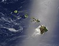

cladogenesis

Definition: Cladogenesis is an evolutionary splitting of a parent species into two distinct species, forming a clade.This event usually occurs when a few organisms end up in new, often distant areas or when environmental changes cause several extinctions, opening up ecological niches for the survivors and causing population bottlenecks and founder effects changing allele frequencies of diverging populations compared to their ancestral population. The events that cause these species to originally separate from each other over distant areas may still allow both of the species to have equal chances of surviving, reproducing, and even evolving to better suit their environments while still being two distinct species due to subsequent natural selection, mutations and genetic drift.Cladogenesis is in contrast to anagenesis, in which an ancestral species gradually accumulates change, and eventually, when enough is accumulated, the species is sufficiently distinct and different enough from its original starting form that it can be labeled as a new form - a new species. Note that with anagenesis the lineage in a phylogenetic tree does not split.
Source: Wikipedia
Wikipedia Page (Something wrong with this association? Let us know.)
Wikidata Page (Something wrong with this association? Let us know.)